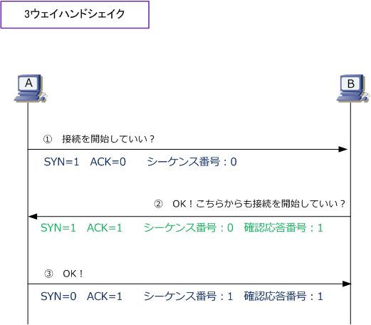
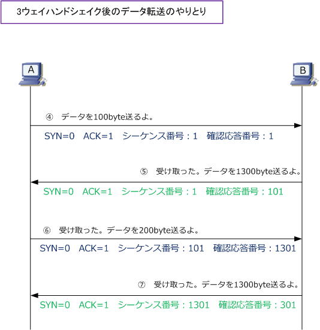
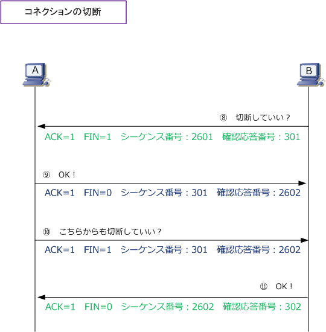
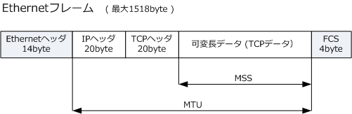

TCP three-way handshaking
TCP - コネクションの確立と切断
TCPはコネクション型プロトコル（通信相手の応答があってはじめて通信を開始する）であることから、 データ転送を行う前にコネクションの確立を行います。このTCPにおいて使用されるコネクションの確立 のことを3ウェイハンドシェイクといいます。以下の手順の通り “3回のやりとり" によって確立されます。

① ホストAからホストBにコネクション確立の要求をします。つまり、TCPヘッダの中にあるSYNビットは 「1」でありACKビットが「0」であると分かります。シーケンス番号は最初だけはランダムな値が割り当て られます。今回は例として「0」とします。確認応答番号(いわゆるACK番号）は通信の開始にはありません。
② ホストBはホストAのコネクション要求に応えます。そしてホストBからもコネクション確立を要求します。 つまりSYNは「1」ACKは「1」であることが分かります。シーケンス番号は最初だけランダムな値が割り当て られます。例えば「0」として、確認応答番号は「相手から受信したシーケンス番号」＋「データサイズの値」 ですが、3ウェイハンドシェイクでは「相手から受信したシーケンス番号」に「１」を加算した値となります。
③ ホストAもホストBからのコネクション要求に応えます。SYNは「0」、ACKは「1」であると分かります。 シーケンス番号は「相手から受信した確認応答番号」なので「1」となり、確認応答番号は②と同じ考え方な ので「相手から受信したシーケンス番号」に「1」を加算した値となります。つまり、今回の場合は「1」です。
次に、3ウェイハンドシェイクにより確立したコネクション上でデータをやりとりする時の流れを見てみます。

④ ホストAからホストBに例えば100byteのデータを送ります。データ転送では、3ウェイハンドシェイク後 のシーケンス番号と確認応答番号の値が引き続き使用します。従って、上図の④のとおり両方とも「1」です。
⑤ 今度はホストBからホストAに例えば1300byteのデータを送ります。シーケンス番号は、「相手から受信 した確認応答番号」を使用するので「1」となります。確認応答番号は「相手から受信したシーケンス番号」 にデータサイズを加えた値なので「101」となります。⑥と⑦も同じ考え方なので上図で記した値となります。
最後に、データのやりとりが完了してから通信を終了（コネクションの切断）する時のやりとりを見てみます。 コネクションの接続は “3回"のやりとりでしたが、コネクションの切断は "4回" のやりとりが必要となります。

⑧ ホストBからホストAへのデータ送信が完了したので、ホストBはコネクションの切断要求を送信します。 従ってFINビットが「1」となります。今回は、⑦でホストBからAへデータを送信した後、さらに連続して ホストBからAへパケットを送信しています。この場合のシーケンス番号は「直前の自分のシーケンス番号」+ 「自分が送信したデータサイズ」となります。シーケンス番号は「2601」。確認応答番号はそのまま「301」。
⑨ FINを受信したホストAはコネクションの切断要求への確認応答をします。「ACK」や「FIN」は上図通り。 シーケンス番号は「相手から受信した確認応答番号」だから「301」となり、確認応答番号は、今回のように FINへの確認応答の場合「相手から受信したシーケンス番号」に「１」を加算します。つまり「2602」となる。
⑩ ホストAもコネクションの切断要求を送信します。この場合、シーケンス番号と確認応答番号はそのまま。
⑪ FINを受信したホストBはコネクションの切断要求への確認応答をします。シーケンス番号は「相手から 受信した確認応答番号」だから「2602」となり、確認応答番号は、今回のように FIN への応答確認の場合は 「相手から受信したシーケンス番号」に「1」を加算して「302」となります。TCPコネクションが正常に終了。
TCP - 3ウェイハンドシェイクの際に伝えられる「MSS」について
3ウェイハンドシェイク時に伝えられる情報の１つとして、TCPヘッダのオプションにある「MSS」があります。 MSS（Maximum Segment Size）は、1つのTCPパケットで運ぶことができるデータ量のことを指しています。 一般的なTCP/IP環境での最大サイズのEthernetフレーム(1518byte)では、MSSは「1460バイト」になります。 従ってホストAからホストBに14600バイトのTCPデータを送信したい場合、10回のTCPパケットを送出します。

MSSは、3ウェイハンドシェイクの際のSYNパケットで双方向に伝えられて、両者の値のうち小さい値が採用 されて双方向通信の際に使用されます。例えばホストAがMSSを「1460」と通知し、ホストBはMSSを「2000」 と通知するとします。その場合、ホストAとBとの通信で使用するMSSは「1460」となり双方向通信をします。